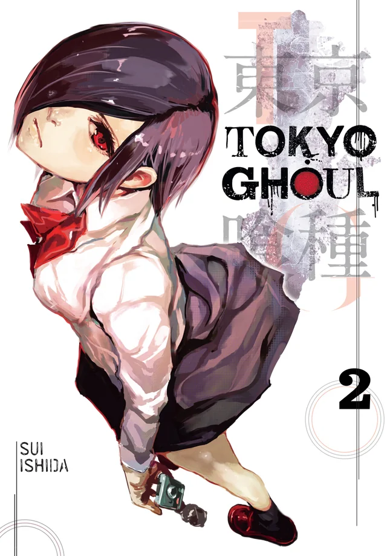
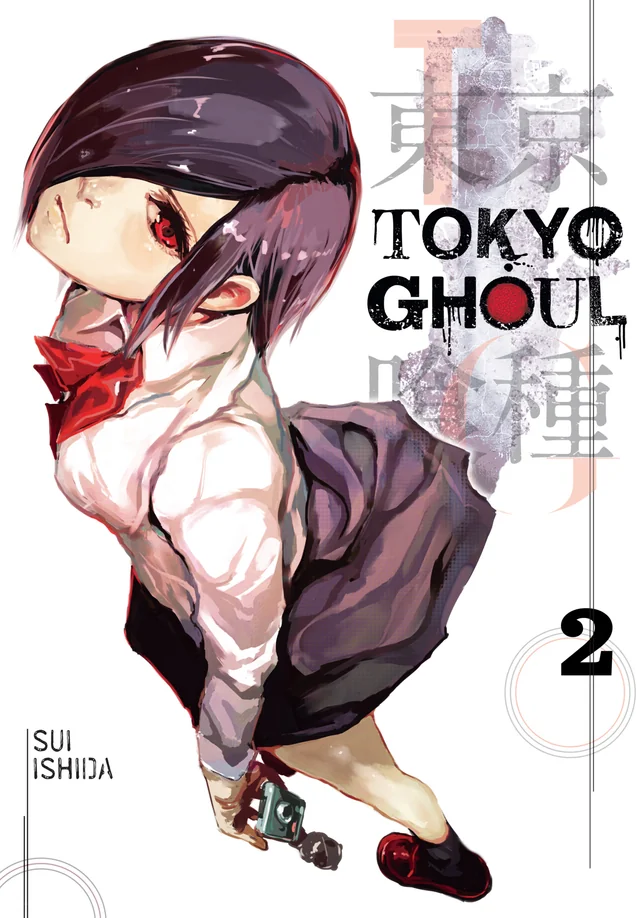
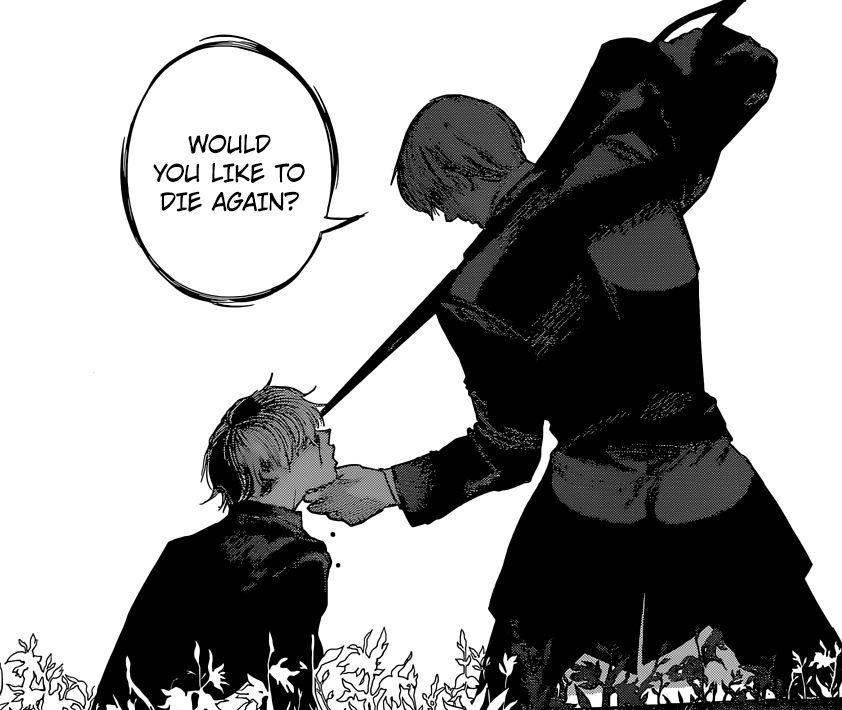
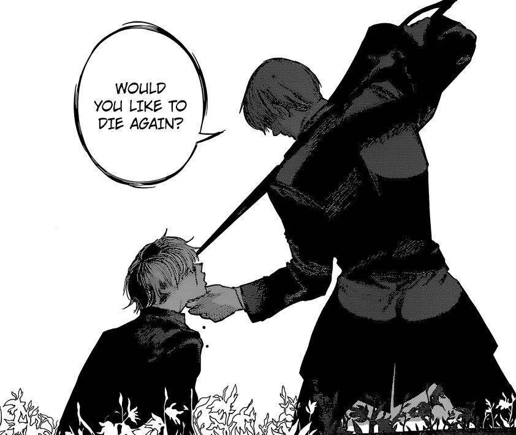
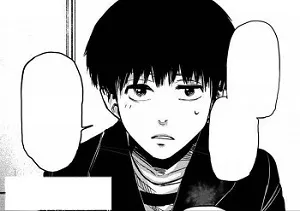
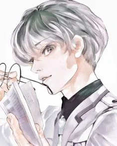
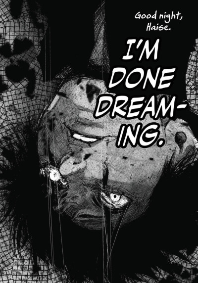
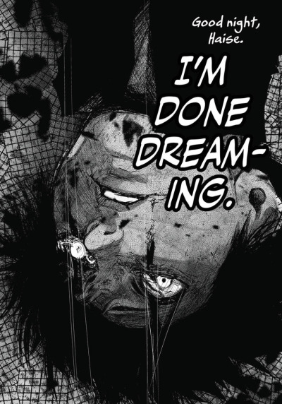

page by @l0versrockz_
this page is intended for pc users are is misformatted on mobile devices

Tokyo Ghoul is a dark, gripping manga by Sui Ishida that tells the story of Ken Kaneki, a shy and bookish college student whose life changes forever after a fateful encounter with a ghoul creature that look human but survive by feeding on human flesh. After a dangerous accident, Kaneki becomes a half-ghoul, forced to navigate the violent and secretive world of ghouls while trying to hold on to his humanity. The series explores the struggles of identity, morality, and survival, as Kaneki faces terrifying enemies, forms uneasy alliances, and comes to understand the blurred line between humans and ghouls. With intense action, psychological depth, and hauntingly emotional moments, Tokyo Ghoul presents a dark, thought-provoking tale of transformation and self-discovery.
 


 

Ken Kaneki, the protagonist of Tokyo Ghoul, begins as an ordinary, timid college student who loves reading. His life changes drastically after a near-fatal encounter with a ghoul, resulting in an organ transplant that turns him into a half-ghoul. This transformation forces him into the violent and morally complex world of ghouls, creatures who survive by eating human flesh. Kaneki struggles with his dual identity, trying to maintain his humanity while coping with his ghoul instincts. Early on, he is naive and hesitant, often avoiding confrontation and seeking safety, but the constant threat from both ghouls and humans pushes him to grow in strength and resolve. As the story progresses, Kaneki undergoes profound psychological and physical transformations. He experiences intense suffering and trauma, particularly at the hands of the sadistic ghoul Yakumo “Jason” Oomori, which shatters his previous timid personality. Through these trials, he becomes more assertive, strategic, and willing to embrace his ghoul nature to survive and protect those he cares about. Kaneki’s journey is defined by the balance between kindness and ruthlessness; he retains a core sense of empathy even as he is forced to commit brutal acts. By the end of Tokyo Ghoul, Kaneki has evolved into a complex, resilient individual who embodies both the fragility and strength of human and ghoul existence.



Tokyo Ghoul:re is the sequel to the original Tokyo Ghoul series, continuing the story of Ken Kaneki after significant transformations in his life and identity. Set two years after the events of Tokyo Ghoul, the series introduces a new protagonist, Haise Sasaki, who is later revealed to be Kaneki himself suffering from amnesia. As Haise, he works as a mentor for a special team of CCG investigators known as the Quinx Squad, who are humans with ghoul abilities. The narrative delves deeper into the conflicts between ghouls and humans, exploring themes of identity, memory, and the search for belonging. Tokyo Ghoul:re expands on the complex world established in the original series, introducing new characters, factions, and moral dilemmas while continuing Kaneki's journey of self-discovery and acceptance of his dual nature.

 
